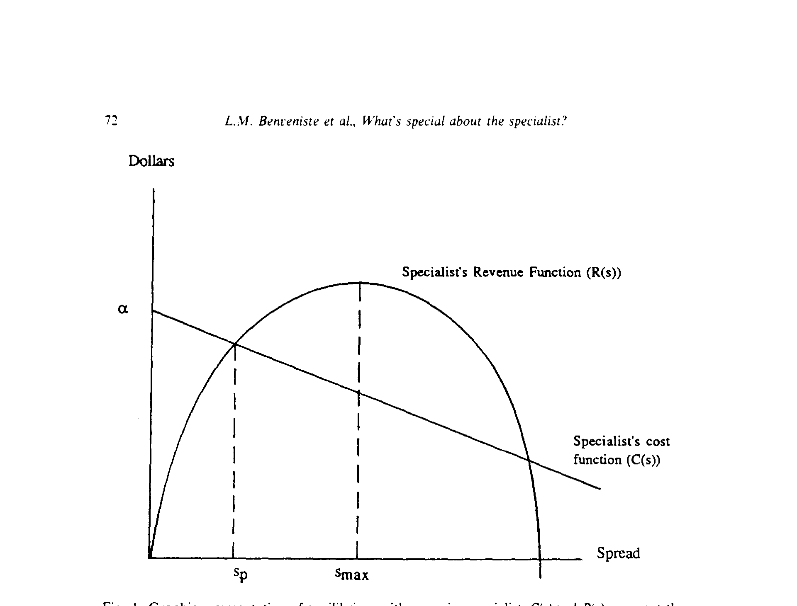
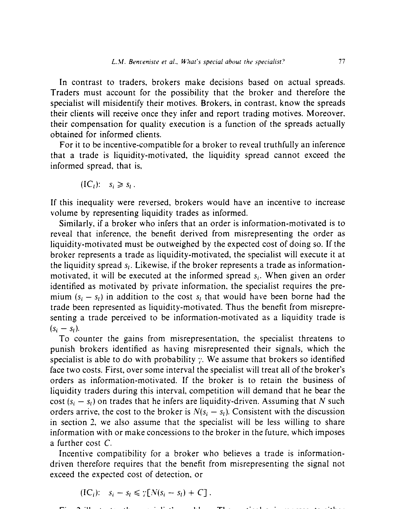
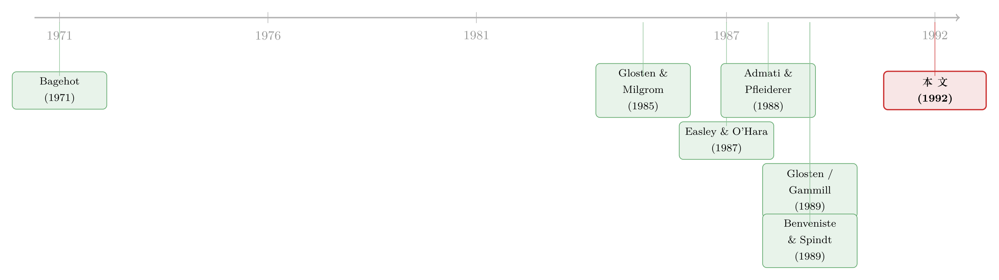

「专家做市商」凭什么特别？——一段长久的关系，如何驯服了信息不对称
本文读的是 Benveniste, Marcus & Wilhelm (1992, JFE)：纽交所那位「专家做市商」之所以特别，不在于他报价更聪明，而在于他认得每一个常来下单的经纪人。正是这层「认得」，让他能在事后惩罚那些利用私有信息占便宜的人；而这根「大棒」，反过来能把买卖价差压低，甚至同时让知情者和不知情者都过得更好——一个看似不可能的帕累托改进。
1 一个被「自利」嫌疑笼罩的说法
先从一句话说起。1990 年，时任纽交所主席的 William Donaldson 放话：
当一笔交易里有一个活人替你盯着，周围还有一群买家和卖家，你能拿到更好的买价和卖价。
这话听着很美，但任何一个受过训练的读者都会立刻警觉：这不就是既得利益者在替自己辩护吗？ 交易所的会员们当然希望你相信「人肉做市」不可替代——否则一台冷冰冰的、彻底匿名的电子撮合系统，分分钟把他们的饭碗端走。所以，「专家做市商系统是一种更优越的市场组织形式」这个论断，长期以来更像是一种行业话术，而不是一个被严肃论证过的命题。
本文要做的，恰恰是把这句话从「自利的嫌疑」里捞出来，给它一个干净的理论证明。三位作者的结论很大胆：专家做市商系统确实可以被看作一种制度安排，它同时改善了交易所会员的福利和公众客户的成交条件——办法是降低人们利用信息不对称去占便宜的动机。
那么，专家到底「特别」在哪？
2 旧故事：价差是一笔「人头税」
要看懂这篇文章的新意，得先回到它要对话的旧故事。
自 Bagehot (1971) 起，人们就明白买卖价差 (bid-ask spread) 里藏着一块「信息成本」：市场里总有一些知情交易者 (informed traders)，他们掌握了证券真实价值的私有信息，专挑做市商报错价的时候下手。做市商跟他们对赌必输，于是只能把这笔损失，通过加宽价差摊给所有人。Glosten & Milgrom (1985) 把这个机制写成了经典：做市商是被动 (passive) 的——他无法分辨面前这一单到底是「为了用钱」的流动性交易，还是「为了赚信息差」的知情交易，索性一视同仁，报一个统一的价差。
结果是什么？不知情的流动性交易者，替知情交易者交了一笔人头税。 价差越宽，这笔税越重；而信息越值钱，价差就被顶得越高。
后人想了很多办法替不知情者「减负」：让他们对订单的规模 (Easley & O'Hara, 1987) 或时机 (Admati & Pfleiderer, 1988) 有所选择，甚至允许他们「事先声明自己是无害的」。但万变不离其宗——只要做市商分不清谁是谁，把两类订单「池化 (pooling)」就不可避免，不知情者就总要承担和知情者混在一起的代价。
接着，一个自然的问题是：这些模型有没有一个共同的、却未必符合现实的隐含假设？
有。它们几乎都默认做市商直接面对公众客户。可现实并非如此。纽交所的绝大部分成交量，是通过场内经纪人 (floor brokers) 这一层中介漏给专家的。截至 1989 年，纽交所的活跃交易社区由 432 名专家和 846 名场内经纪人主导——一个又小又稳定的圈子。而那个匿名的电子下单系统 SuperDot，虽然包揽了约四分之三的订单笔数，却只占 10%–20% 的成交量。换句话说，真正大额、也更可能由信息驱动的交易，恰恰是那些落在经纪人手里的。
这层「被前人忽略的中介」，就是全文的支点。
3 真正关键的一步：从「匿名」到「认得」
专家和经纪人之间，是一种长期、重复、且可识别身份的关系。这意味着：哪怕专家事前很难看穿某一单是不是知情交易，事后——当信息公开、价格变动、谁占了便宜一目了然之时——他完全可以秋后算账。
这就是本文的核心机制。作者把它形式化为对比两种市场：
- 一种里，交易者保持绝对匿名（这正是几乎全部微观结构文献所描绘的世界）。匿名意味着知情者占了便宜也无从追责，于是他有一切动机把私有信息的收益榨干。
- 另一种里，所有交易都由经纪人代理，而利用私有信息的经纪人可能被事后识别。于是他下手之前，必须把「将来被专家制裁」的风险，和眼下的私利掂量一番。
制裁的手段并不需要写进任何明文合同，它琐碎却有效：专家可以在限价订单簿之外，给「名声不好」的经纪人一个更差的报价表；可以拒绝替他「做完」那笔卡在限价单上的剩余订单；可以不再替他「盯着」大单、不再在对手盘出现时给他通风报信。这些服务一旦撤掉，对经纪人就是实打实的机会成本。Hasbrouck (1988) 发现约 15% 的纽交所成交发生在买卖价差的中点，作者认为这正是专家议价裁量权的痕迹——价格给谁、给到哪一档，全看专家对这笔交易性质的判断。
这里有一个很漂亮的「外部性」论证：单个经纪人利用私有信息，固然能替自己的客户抢到更好的执行、攒下「会办事」的口碑；但他抬高的是整个市场的均衡价差，压低的是所有人的流动性成交量。专家，作为交易所会员的代理人，把这笔外部性的账精准地砸回到肇事者头上。每个经纪人都明白：把自己绑进这套「谁作弊就罚谁」的制度，长期收益大于短期私利。于是专家成了「公共利益的执行者」。
这一思路与 Benveniste & Spindt 在一级市场（投行如何给新股定价配售）里的洞见一脉相承——持续的业务关系，本身就是一种可以施加制裁的资本。（关于一级市场里这套「关系换信息」的逻辑，可参见《新股「打折」的真正理由，不是让你说真话，而是先让你肯掏钱》。）
4 模型：把直觉拧成一道方程
下面进入正式模型。请允许我把符号一步步铺开——它其实出奇地简洁。
资产价值。 资产的初始内在价值为 \(p^*\)。每轮交易前，它可能以概率 \(\pi\) 受到一次冲击，等概率地跳到 \(p^*+z\) 或 \(p^*-z\)；冲击只在交易结束后才公开。于是内在价值服从一个随机游走：
$$ p^* + z \ \text{w.p.}\ \tfrac{\pi}{2}, \qquad p^* \ \text{w.p.}\ 1-\pi, \qquad p^* - z \ \text{w.p.}\ \tfrac{\pi}{2}. $$
流动性交易者因为用钱而交易，他们的需求对成交成本有弹性。设流动性交易者面对的（半）价差为 \(s_l\)，则成交量为
$$ V(s_l) = q^* - \delta s_l, $$
其中 \(\delta\) 衡量成交量对价差的敏感度。每笔流动性交易对做市商的净收入是整个价差 \(2s_l\)，故做市商从流动性交易得到的总收入是
$$ R(s_l) = 2 s_l\,(q^* - \delta s_l). $$
知情交易者受一个总头寸上限 \(q_i\) 约束（好消息时做多、坏消息时做空，否则风险中性下需求会无穷大）。做市商和他们对赌，每股的损失是错价 \(z\) 减去向其收取的价差 \(s_i\)；只有概率 \(\pi\) 会真的出现冲击，所以做市商的预期成本是
$$ C(s_i) = \pi q_i\,(z - s_i). $$
到这里，整个故事已经被压进两条曲线：一条向上、最终因弹性而下弯的收入曲线 \(R\)，一条随 \(s_i\) 上升而下降的成本曲线 \(C\)。
4.1 被动做市商：池化均衡
被动做市商分不清两类人，只能报一个统一价差 \(s = s_i = s_l\)。均衡由「预期利润为零」的池化价差 \(s_p\) 决定：
把它整理成关于 \(s_p\) 的二次方程：
$$ 2\delta\, s_p^2 \;-\; (2 q^* + \pi q_i)\, s_p \;+\; \pi q_i z \;=\; 0. $$
一般有两个零利润解，竞争会选较小的那个（价差越小越有竞争力）。取负号的根，得到池化均衡价差：
$$ s_p = \frac{\pi q_i + 2 q^* - \sqrt{(\pi q_i + 2 q^*)^2 - 8\,\pi q_i z\,\delta}}{4\delta}. $$
读这个式子，关键看分子里那个根号下的 \(\pi q_i z\)——它正是私有信息的期望价值（出现概率 × 头寸 × 错价）。信息越值钱，\(s_p\) 越大。这与旧故事完全吻合：池化价差是知情交易者强加给所有人的成本。

Figure 1: Graphic representation of equilibrium with a passive specialist. C(s) and represent the
4.2 主动做市商：当大棒落下
现在让做市商主动 (active) 起来：他能识别、并制裁占便宜的知情经纪人，于是可以给两类人分别报价——给流动性交易者 \(s_l\)，给知情者 \(s_i\)。
第一层结论几乎是显然的：他总能让不知情者过得更好。 制裁的威胁迫使知情经纪人吐露信息，做市商据此向知情者收取一笔（显性或隐性的）费用 \(s_i\)，把对赌损失压下来；既然这笔损失最终是通过价差转嫁给流动性交易者的，损失变小，\(s_l\) 就能低于 \(s_p\)。
但真正反直觉、也更重要的，是第二层结论：在某些条件下，连知情者的成交条件都会一起改善。
凭什么？凭流动性需求的弹性。这是 Admati & Pfleiderer (1988) 那条「自由裁量的流动性需求」假设在这里的回响。逻辑链是这样的：给不知情者降价（\(s_l\) 下降）→ 流动性成交量 \(V=q^*-\delta s_l\) 膨胀 → 做市商从流动性交易里赚得的收入 \(R\) 大涨 → 这笔多出来的钱，足以让他对知情者也报一个比 \(s_p\) 更低的价差。于是知情者、不知情者、做市商，三方皆赢——这正是「池化均衡可以被帕累托改进」的含义。
能不能赢、赢多少，取决于流动性成交量对交易成本的弹性 \(\delta\)，以及私有信息的价值 \(\pi q_i z\)。这是一个干净、可证伪的比较静态。

Figure 2: illustrates the specialist’s problem. The vertical axis represents either
更进一步，作者证明：
- 即便这个分离均衡 (separating equilibrium) 本身仍可能是低效的，只要专家制裁的力度足够大，就能达到一个有效率的均衡；
- 在逆向选择极其严重、以至于池化市场本会直接关闭（价差宽到没人来做流动性交易）的情形下，制裁权甚至能把市场维持着开门，并实现有效配置。
这就是「大棒」的全部威力。
5 文献脉络：从「胡萝卜」到「胡萝卜加大棒」
把这篇论文放回它生长的那条线上，脉络相当清晰。
最初，是 Bagehot (1971) 点出价差里有信息成本；Glosten & Milgrom (1985) 把被动做市商 + 池化写成了正典。随后一拨人（Easley & O'Hara 1987 论规模、Admati & Pfleiderer 1988 论时机）试图在「匿名」框架内替不知情者减负，但都没动「做市商直接面对客户、且无法事后追责」这块地基。
转折来自两篇几乎同时的工作。Glosten (1989) 研究垄断专家的制度设计；而 Gammill (1989) 论证专家主动认下个别交易的亏损、只补偿「第一个揭示信息的人」，能加剧知情者之间的竞争——这是一根「胡萝卜」。
本文的位置，是给 Gammill 的胡萝卜配上一根「大棒」：除了用补偿来诱导知情者说真话，专家还能制裁作弊的经纪人。两者合力，把逆向选择问题压得更轻。而它真正区别于 Glosten 的地方在于：本文的结论同时适用于专家制和竞争性做市机制，并且把一切建立在「一小撮可识别、反复打交道的交易伙伴」之上——这恰恰为「场内交易机制为什么至今存在」给出了一个比前人更令人信服的解释。其制裁逻辑则直接承袭 Benveniste & Spindt 在一级市场里的发现。

（这条「关系—信息—价差」的线索，在后来的实证里反复出现。比如专家做市与逆向选择如何写进价差，可参见《外资股票的价差更宽，可那不是宰客——它在替逆向选择买单》；停牌作为专家「监督工具」的角色，参见《停牌，原来是交易所给「监工」按下的暂停键》；而当市场转向匿名、聪明钱如何重新现形，可参见《匿名的市场，反而藏不住「聪明钱」》。）
6 评论与延伸（Q&A + 研究方向）
(a) 几个可能的疑问
Q：这和 Glosten & Milgrom (1985) 到底差在哪？不都是讲价差里的信息成本吗？
差在「做市商能不能事后追责」。GM 里做市商是被动的、面对匿名客户，价差是它转嫁损失的唯一阀门，池化不可避免。本文加了场内经纪人这层可识别的中介，于是专家能在事后制裁作弊者——这把价差从「被动的人头税」变成了「主动的激励工具」。
Q：让知情者也过得更好，听起来像免费的午餐，可信吗？
它不是凭空变出来的，而是弹性变出来的。降价让流动性成交量膨胀，做市商在流动性这一侧多赚的钱，足以补贴知情侧的降价。所以「三方皆赢」严格依赖于流动性需求的弹性 \(\delta\) 足够大、以及信息价值不太离谱——这是一个有边界、可检验的结论，而非普遍的免费午餐。
Q：现实里专家真的会「制裁」吗？还是这只是个好听的模型假设？
作者承认制裁难以直接测量，但给了不少间接证据：Cox & Rubinstein (1985) 记录做市商会对疑似信息交易者「给更保守的报价」；Hasbrouck (1988) 发现 15% 的成交在价差中点，暗示专家的议价裁量；作者与多位专家的访谈也印证「被抓到作弊的人，事后会被另眼相待」。它是非正式但被业内广泛认可的。
Q：那个「市场本会关闭、制裁却能维持其开门」的结论，靠谱吗？
这是模型里最强、也最依赖参数的结论。它成立的前提是制裁力度足够大，能把知情者的预期私利压到低于「被制裁的预期损失」。逻辑自洽，但「足够大」在现实中有多大、专家有没有这个力度，模型本身没有回答——这正是它作为纯理论的局限。
Q：这套逻辑只适用于专家制（如纽交所）吗？纯电子市场怎么办？
关键不是「专家」这个身份，而是「重复、可识别」这个条件。作者明确指出结论同时适用于竞争性做市机制。反过来，越是彻底匿名的市场，这根大棒越举不起来——这也解释了为什么匿名化会改变市场的逆向选择结构。
Q：它对「该不该把交易所电子化、匿名化」的政策辩论意味着什么？
它提供了一个反方论据：匿名化在带来公平与效率观感的同时，可能摧毁了一种本可缓解信息不对称的制度资本。Donaldson 那句「自利的辩护」，因此未必全是自利。
(b) 几个可能的研究问题与提案
1. 把「关系换价差」搬到公司债的交易商网络里。 【经济故事】公司债是典型的 OTC、交易商主导、且买卖双方反复打交道的市场——和本文的「专家—经纪人」结构高度同构。若交易商也能事后识别并「制裁」利用信息占便宜的对手，那么关系越久的客户，逆向选择折价应越小。 【可行性】高。TRACE 成交数据 + 交易商身份（监管版 TRACE 含交易商代码）可构造「客户—交易商」关系强度，识别上可用客户被迫换交易商（如交易商退出、合并）作为外生冲击。是 doable 的实证。
2. 外资持有人是不是更容易被「制裁」失灵？ 【经济故事】外资机构与本地做市商的关系往往更短、更不稳定，本文逻辑预测：关系资本越薄，越难施加事后制裁，价差里的信息成分越高。这能给「外资股票价差更宽」提供一个关系而非歧视的解释。 【可行性】中。需要跨境交易簿 + 投资者类型标签（部分新兴市场交易所有），识别可借「外资准入放开」这类自然实验。数据获取是主要门槛。
3. 市场匿名化的自然实验：制裁资本被摧毁了多少？ 【经济故事】当某个交易场所从「具名」转向「匿名」（或反之），本文预测逆向选择成分、流动性成交量弹性都会发生可观测的跳变。 【可行性】高。历史上有不少交易所引入/取消交易商匿名的事件（如各交易所先后启用匿名 ID）。事件研究 + 价差分解（如 Hasbrouck 式信息成分）即可。
4. 把「胡萝卜 vs 大棒」分开来量。 【经济故事】Gammill 的补偿（胡萝卜）和本文的制裁（大棒）是两条不同的渠道。能否在同一市场里分别识别两者对价差的贡献？ 【可行性】中。需要能分别观测到「价格让利」（中点成交、价差内成交）与「事后惩罚」（关系恶化后的报价变化）。微观结构数据足够细时 doable，但识别两条渠道的因果分离不易。
7 我的判断
这是一篇以小博大的理论佳作。它没有花哨的数学——核心不过是两条曲线相交、一道二次方程——却把一个被「自利嫌疑」缠了很久的行业说法，翻译成了一个干净的福利命题：专家做市商的价值，不在报价的精明，而在关系的持久。 把「场内经纪人这层中介」从被忽略的背景里拎出来当作支点，是全文最聪明的一笔；而「降价 → 弹性放量 → 连知情者一起受益」这个帕累托改进，是我读到的最漂亮的反直觉结果。
对识别（在理论语境下，是对结论稳健性）的担忧有两点。其一，「制裁力度足够大」始终是个外生给定的旋钮，模型没有内生地告诉我们这根大棒能有多粗——而最强的那些结论（维持市场开门、达到有效率均衡）恰恰最依赖它。其二，全文建立在「重复 + 可识别 + 小圈子」之上，可一旦市场规模扩大、参与者流动、或彻底匿名化，这套制度资本会以多快的速度蒸发？文章给了方向，却没给速度。
我接下来最想看到的，是把这套逻辑请进当代 OTC 信用市场做一次实证体检——尤其是公司债的交易商网络。那里既有反复打交道的关系、又有可识别的对手身份、还有 TRACE 这样的细粒度数据，几乎是为检验「关系如何驯服信息不对称」量身定做的试验场。三十多年前写在纽交所场内的这套直觉，很可能在今天的债券交易台上，依旧每天上演。
参考文献
Admati, A. R., & Pfleiderer, P. (1988). A theory of intraday patterns: Volume and price variability. Review of Financial Studies 1(1), 3–40.
Bagehot, W. (1971). The only game in town. Financial Analysts Journal 27(2), 12–14.
Benveniste, L. M., Marcus, A. J., & Wilhelm, W. J. (1992). What's special about the specialist? Journal of Financial Economics 32(1), 61–86.
Benveniste, L. M., & Spindt, P. A. (1989). How investment bankers determine the offer price and allocation of new issues. Journal of Financial Economics 24(2), 343–362.
Cox, J. C., & Rubinstein, M. (1985). Options Markets. Englewood Cliffs, NJ: Prentice-Hall.
Easley, D., & O'Hara, M. (1987). Price, trade size, and information in securities markets. Journal of Financial Economics 19(1), 69–90.
Gammill, J. F. (1989). The organization of financial markets: Competitive versus cooperative market mechanisms. Working paper, Harvard Business School.
Glosten, L. R. (1989). Insider trading, liquidity, and the role of the monopolist specialist. Journal of Business 62(2), 211–235.
Glosten, L. R., & Milgrom, P. R. (1985). Bid, ask and transaction prices in a specialist market with heterogeneously informed traders. Journal of Financial Economics 14(1), 71–100.
Hasbrouck, J. (1988). Trades, quotes, inventories, and information. Journal of Financial Economics 22(2), 229–252.